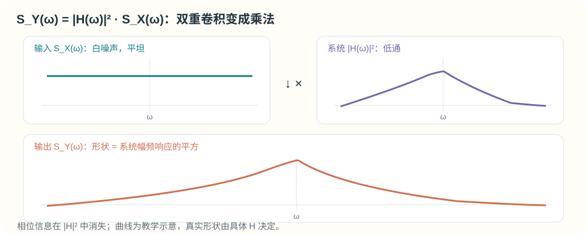
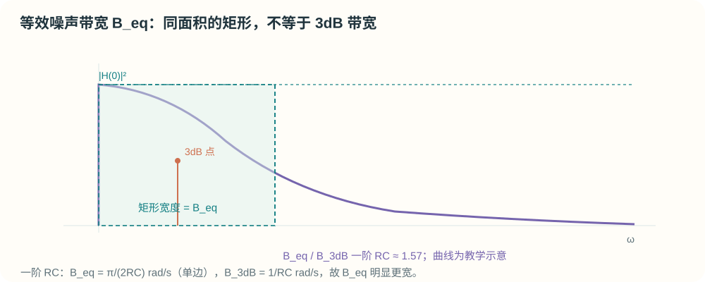
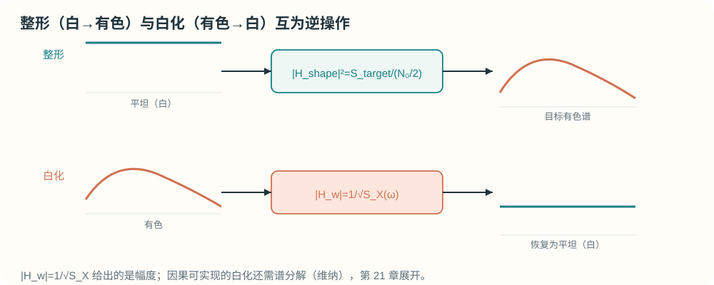

CHAPTER 13 · 系统与模型
随机信号通过线性系统（下）
上一章的双重卷积在频域里变成一个乘法：S_Y(ω)=|H(ω)|²S_X(ω)。由此可以定义等效噪声带宽、计算白噪声输出功率，并理解噪声整形与白化这对互逆操作。
- 由输出自相关推出输出功率谱并计算总输出功率
- 正确定义等效噪声带宽并区分它与 3dB 带宽
- 用 |H|2 写出常见系统的输出谱与自相关
双重卷积在频域变成一次乘法
上一章的平稳结果是 RY(τ)=(RX∗ψh)(τ)，其中 ψh(τ)=h(τ)∗h(−τ)。两边做傅里叶变换（本章仍用第 09 章的角频率约定）：时域卷积变乘法，而 ψh 的变换是 H(ω)·H*(ω)。对实冲激响应，FT{h(−τ)}=H*(ω)，于是：
总输出功率（均方值）由 (9.2) 的约定给出，对白噪声输入取 SX(ω)=N₀/2：

幅度而非相位：(13.1) 只用到 |H(ω)|²。两个幅频响应相同、相位不同的系统会给同一个输出功率谱，但输出波形不同。若关心波形或时延，必须回到 RY 或 H(ω) 本身。
等效噪声带宽：用一个矩形等效整个系统
我们希望找一个理想矩形滤波器，使它在白噪声输入下产生与实际系统相同的噪声功率。设滤波器在参考频率 f₀ 处的功率增益为 |H(f₀)|²（低通取 f₀=0，带通取中心频率）。把单边输出功率写成
于是白噪声（单边密度 N₀）通过系统的输出功率为 PY=N₀|H(f₀)|²BN——只需知道增益与一个等效带宽。注意 (13.3) 是单边定义；换成角频率时 Beq=∫0∞|H(ω)|²dω/|H(ω₀)|²（rad/s），两者相差 2π。
对一阶 RC 低通，|H(ω)|²=1/(1+(ωRC)²)，于是单边 Beq=π/(2RC) rad/s，而 ω3dB=1/RC，比值 π/2≈1.571。换成 Hz：BN=1/(4RC)，B3dB=1/(2πRC)，比值同为 π/2。等效噪声带宽总是 ≥ 3dB 带宽，因为实际幅频响应在 3dB 点之外仍有可观的功率通过。
| 滤波器 | BN/B3dB |
|---|---|
| 一阶 RC | π/2 ≈ 1.571 |
| 二阶巴特沃斯 | ≈ 1.11 |
| 三阶巴特沃斯 | ≈ 1.05 |

白噪声通过常见 LTI 系统
设输入双边谱 SX(ω)=N₀/2，则输出谱形状完全由 |H(ω)|² 决定；输出自相关由冲激响应自相关 ψh 决定；输出平均功率在 τ=0 处取得：
注意是 ψh(0)（即 |H|² 的面积）决定功率，而不是 ψh 的面积——后者等于 |H(0)|²，是直流增益。即使输入白噪声完全不相关，输出也必然相关，因为系统引入了记忆。
| 系统 | H(ω) | SY(ω)（除以 N₀/2） | 备注 |
|---|---|---|---|
| RC 低通 | 1/(1+jωRC) | 1/(1+(ωRC)²) | RY∝e−|τ|/RC，功率 ∝1/(RC) |
| RC 高通 | jωRC/(1+jωRC) | (ωRC)²/(1+(ωRC)²) | 含 δ(τ) 项；等效带宽发散 |
| 理想低通（|ω|≤2πB） | rect | 1（带内） | RY=N₀B·sinc(2πBτ) |
| 理想微分器 | jω | ω² | 高频无限增益，功率发散 |
| 理想积分器 | 1/(jω) | 1/ω² | 不稳定，输出功率发散 |
sinc 约定：表中采用 sinc(x)=sin(x)/x。不同教材可能用 sin(πx)/(πx)，引用数值时必须先声明约定，否则带宽与自相关公式会差一个因子 π。
噪声整形与白化滤波器
噪声整形把白噪声变成指定谱形的有色噪声：给定目标谱 Starget(ω)，选成形滤波器使其幅频响应满足
白化是逆运算：输入有色噪声 SX(ω)>0，取 |Hw(ω)|=1/√SX(ω)，则输出谱 SY=|Hw|²SX=1，变为白噪声。白化在接收机中用于把有色噪声环境转到白噪声假设下再处理。

幅度容易写，因果实现难：|Hw|=1/√SX 只给出幅度。要得到一个因果、稳定、可物理实现的白化滤波器，需要先做谱分解，把 SX(ω)=|Hmin(ω)|² 分解为最小相位因子的模方，再取 Hw=1/Hmin。具体方法（维纳滤波）在第 21 章展开。
验证 RC 的等效噪声带宽与输出功率
from math import pi, atan, isclose
RC, N0 = 1.0, 2.0
W = 1.0e9
# |H(w)|^2 = 1/(1+(w RC)^2), H(0)=1
one_sided = (1/RC)*atan(W*RC) # int_0^W |H|^2 dw -> pi/(2 RC)
whole = (1/RC)*(atan(W*RC)-atan(-W*RC)) # int_-W^W |H|^2 dw -> pi/(RC)
assert isclose(one_sided, pi/(2*RC), rel_tol=1e-6)
assert isclose(whole/(2*pi)*(N0/2), N0/(4*RC), rel_tol=1e-6)
# equivalent noise bandwidth vs 3 dB bandwidth (one-sided, rad/s)
B3 = 1/RC # (1+(w RC)^2)=2 at w=1/RC
assert isclose(one_sided/B3, pi/2, rel_tol=1e-6)
# ideal low-pass |w|<=2 pi B: power = N0 * B
B = 100.0
assert isclose((N0/2)*(1/(2*pi))*(2*(2*pi*B)), N0*B, rel_tol=1e-12)
自检：为什么用 3dB 带宽估算噪声会偏低？
因为实际幅频响应在 3dB 点之外仍有功率通过，BN>B3dB。用 B3dB 替代 BN 会低估噪声功率，滚降越缓偏差越大。
边界：带宽近似带来的系统性偏差
- 用 B3dB 代替 BN 会低估噪声：一阶 RC 就低估约 π/2 倍（即约 2 dB）。阶数越低、滚降越缓，偏差越大；只有高阶巴特沃斯等陡峭响应才接近相等。
- 级联系统乘的是幅频响应：多级级联时 |Htotal|²=∏|Hi|²，带宽近似会逐级累积误差。可靠做法是直接计算 ∫|Htotal|²dω。
- 白化滤波器不唯一：幅度给定，相位可不同；只有要求因果、最小相位时才能由谱分解唯一确定。
- 只算功率时相位不重要：(13.1) 省略了相位；但与检测、时延、波形相关的任务不能只靠 |H|²。
下一章把这些连续时间结论写成离散时间版本：所有卷积与谱关系都有对应的序列形式，因变量换成归一化频率。
参考与核查依据
- ProbabilityCourse · Autocorrelation and PSD：输出功率谱与自相关的关系及积分约定。
- MIT OpenCourseWare · Random Processes：随机过程通过线性系统的频域变换。
- ProbabilityCourse · Stationary Processes：自相关与谱的非负性、平稳前提。